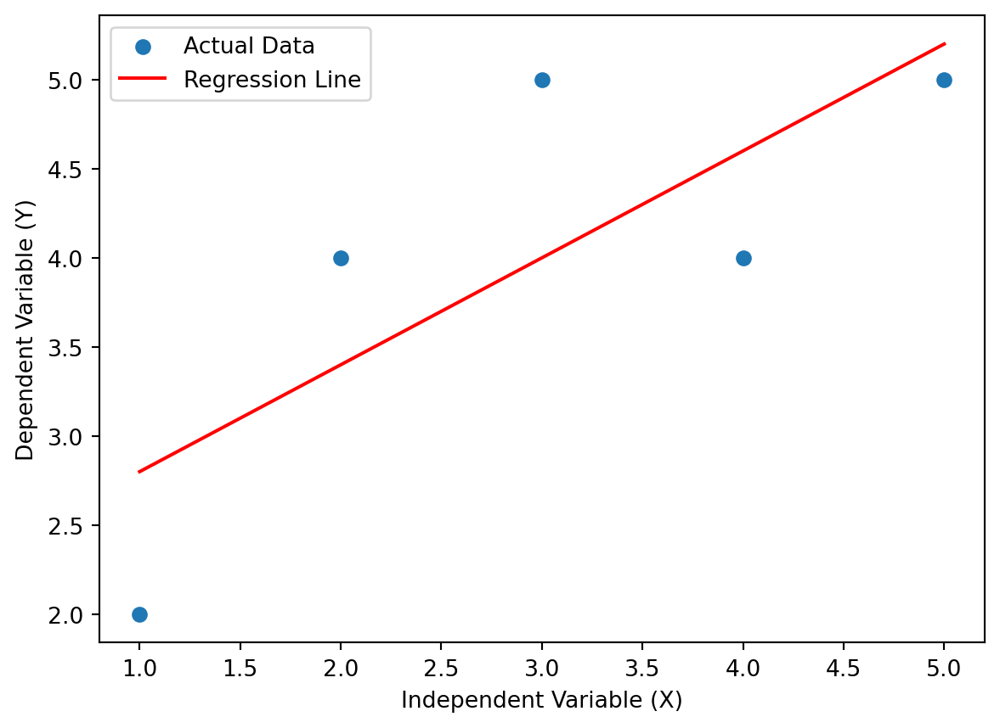
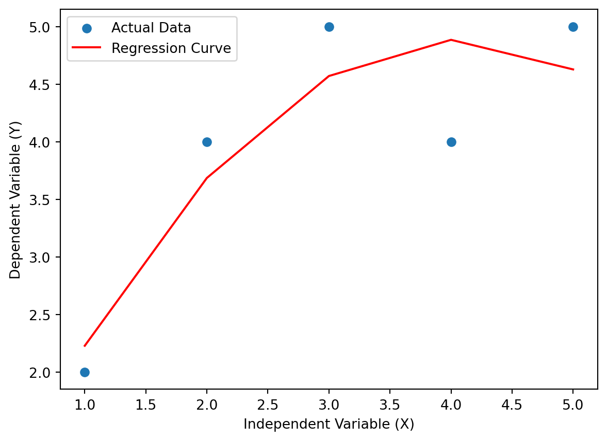

Linear and nonlinear regression are pillars of predictive modeling, allowing us to dissect and understand the relationships within datasets. In this exploration, we will embark on a journey through the intricacies of both linear and nonlinear regression. By understanding their nuances and applications, we aim to equip data scientists with the tools to decipher complex data relationships.
Linear Regression: A Foundation for Interpretability:
Linear regression is a workhorse in the realm of predictive modeling, providing a clear and interpretable means of understanding relationships between variables. Let’s delve into a sophisticated example:
Code
import numpy as npimport pandas as pdimport matplotlib.pyplot as pltfrom sklearn.linear_model import LinearRegressionfrom sklearn.metrics import mean_squared_error# Generate synthetic data for linear regressionnp.random.seed(42)X_linear = np.random.rand(100, 1) *10y_linear =2* X_linear +1+ np.random.randn(100, 1) *2# Fit a linear regression modelmodel_linear = LinearRegression()model_linear.fit(X_linear, y_linear)# Predictions and evaluationy_pred_linear = model_linear.predict(X_linear)mse_linear = mean_squared_error(y_linear, y_pred_linear)# Create a DataFrame for better visualizationdf_linear = pd.DataFrame({'Actual (Linear)': y_linear.flatten(), 'Predicted (Linear)': y_pred_linear.flatten()})# Visualize the linear regression lineplt.scatter(X_linear, y_linear, alpha=0.8)plt.plot(X_linear, model_linear.predict(X_linear), color='red', linewidth=2)plt.title(f'Linear Regression (MSE: {mse_linear:.2f})')plt.xlabel('Independent Variable')plt.ylabel('Dependent Variable')plt.show()# Display the table for linear regressionprint("Linear Regression Example:")print(df_linear.head(10))print("\nMean Squared Error (Linear):", mse_linear)
Explanation: The code generates synthetic data, fits a linear regression model, evaluates predictions using mean squared error, and visualizes the data points along with the best-fit line. The table showcases the actual and predicted values for the first 10 observations.
Mathematical Explanation of Linear Regression:
Variables:
Dependent Variable (Y): The outcome we’re predicting.
Independent Variable (X): The variable used for predictions.
Equation: Linear regression uses Y=mx+b.
Y is the predicted value.
m is the slope, indicating the change in Y for a one-unit change in X.
x is the independent variable.
b is the y-intercept, predicting Y when X is zero.
Objective: Find the best-fitting line to represent the relationship between X and Y.
How It Works:
Start with a random line.
Calculate predicted Y values.
Adjust the line to minimize differences between predicted and actual Y values.
Repeat until the line fits the data closely.
Here’s a simple example using Python and the scikit-learn library:
Code
import numpy as npimport matplotlib.pyplot as pltfrom sklearn.linear_model import LinearRegression# Create example dataX = np.array([1, 2, 3, 4, 5]).reshape(-1, 1)Y = np.array([2, 4, 5, 4, 5])# Create and fit the linear regression modelmodel = LinearRegression()model.fit(X, Y)# Predict Y valuesY_pred = model.predict(X)# Plot the data points and the regression lineplt.scatter(X, Y, label='Actual Data')plt.plot(X, Y_pred, color='red', label='Regression Line')plt.xlabel('Independent Variable (X)')plt.ylabel('Dependent Variable (Y)')plt.legend()plt.show()

This code generates a scatter plot with a regression line for a simple dataset. Adjust the values of X and Y for different data. The LinearRegression model is used to fit the data and make predictions. The resulting plot visualizes the relationship between the variables.
The last stage involves assessing the algorithm’s performance, a crucial step to compare the effectiveness of various algorithms on a specific dataset. In the context of regression algorithms, three frequently utilized evaluation metrics come into play:
Mean Absolute Error (MAE):
Formula: MAE=n1∑i=1n∣Yactual,i−Ypred,i
Explanation: It calculates the average absolute differences between the actual and predicted values.
Mean Squared Error (MSE):
Formula: MSE=n1∑i=1n(Yactual,i−Ypred,i)2
Explanation: It calculates the average of the squared differences between actual and predicted values.
Root Mean Squared Error (RMSE):
Formula: RMSE=MSE
Explanation: It’s the square root of MSE, providing a measure of the average magnitude of errors in the predictions.
These metrics help assess the performance of the linear regression model by quantifying the accuracy of predictions.
Code
import numpy as npimport matplotlib.pyplot as pltfrom sklearn.linear_model import LinearRegressionfrom sklearn.metrics import mean_absolute_error, mean_squared_error# Create example dataX = np.array([1, 2, 3, 4, 5]).reshape(-1, 1)Y_actual = np.array([2, 4, 5, 4, 5])# Create and fit the linear regression modelmodel = LinearRegression()model.fit(X, Y_actual)# Predict Y valuesY_pred = model.predict(X)# Calculate Mean Absolute Error (MAE)mae = mean_absolute_error(Y_actual, Y_pred)# Calculate Mean Squared Error (MSE)mse = mean_squared_error(Y_actual, Y_pred)# Calculate Root Mean Squared Error (RMSE)rmse = np.sqrt(mse)# Print evaluation metricsprint(f"Mean Absolute Error (MAE): {mae}")print(f"Mean Squared Error (MSE): {mse}")print(f"Root Mean Squared Error (RMSE): {rmse}")# Plot the data points and the regression lineplt.scatter(X, Y_actual, label='Actual Data')plt.plot(X, Y_pred, color='red', label='Regression Line')plt.xlabel('Independent Variable (X)')plt.ylabel('Dependent Variable (Y)')plt.legend()plt.show()
Mean Absolute Error (MAE): 0.6399999999999999
Mean Squared Error (MSE): 0.47999999999999987
Root Mean Squared Error (RMSE): 0.6928203230275508
Nonlinear Regression: Capturing Complexity with Polynomial Regression:
Nonlinear regression steps in when relationships are more complex. Polynomial regression, a versatile technique, allows us to model curved patterns. Let’s explore a more sophisticated example:
Code
import numpy as npimport pandas as pdimport matplotlib.pyplot as pltfrom sklearn.preprocessing import PolynomialFeaturesfrom sklearn.linear_model import LinearRegressionfrom sklearn.pipeline import make_pipelinefrom sklearn.metrics import mean_squared_error# Generate synthetic data for nonlinear regressionnp.random.seed(42)X_nonlinear = np.random.rand(100, 1) *10y_nonlinear =0.5* X_nonlinear**2-2* X_nonlinear +1+ np.random.randn(100, 1) *5# Fit a nonlinear regression model using polynomial featuresdegree_nonlinear =2model_nonlinear = make_pipeline(PolynomialFeatures(degree_nonlinear), LinearRegression())model_nonlinear.fit(X_nonlinear, y_nonlinear)# Predictions and evaluationy_pred_nonlinear = model_nonlinear.predict(X_nonlinear)mse_nonlinear = mean_squared_error(y_nonlinear, y_pred_nonlinear)# Create a DataFrame for better visualizationdf_nonlinear = pd.DataFrame({'Actual (Nonlinear)': y_nonlinear.flatten(), 'Predicted (Nonlinear)': y_pred_nonlinear.flatten()})# Visualize the nonlinear regression curveX_test_nonlinear = np.linspace(0, 10, 100).reshape(-1, 1)plt.scatter(X_nonlinear, y_nonlinear, alpha=0.8)plt.plot(X_test_nonlinear, model_nonlinear.predict(X_test_nonlinear), color='red', linewidth=2)plt.title(f'Nonlinear Regression (Polynomial Degree = {degree_nonlinear}, MSE: {mse_nonlinear:.2f})')plt.xlabel('Independent Variable')plt.ylabel('Dependent Variable')plt.show()# Display the table for nonlinear regressionprint("\nNonlinear Regression Example (Polynomial Degree = {}):".format(degree_nonlinear))print(df_nonlinear.head(10))print("\nMean Squared Error (Nonlinear):", mse_nonlinear)
Explanation: The code generates synthetic data, fits a nonlinear regression model with polynomial features, evaluates predictions using mean squared error, and visualizes the data points along with the regression curve. The table showcases the actual and predicted values for the first 10 observations.
Mathematical Explanation of Nonlinear Regression:
Nonlinear regression is a statistical method used when the relationship between independent and dependent variables is not a straight line. It accommodates more complex patterns, allowing for curved relationships in the data.
Equation Form: Unlike linear regression, the equation for nonlinear regression involves nonlinear functions and parameters. For instance, a possible form could be Y=(a⋅X^b)+c, where a, b, and c are parameters.
Objective: Similar to linear regression, the aim is to find the best-fitting curve that represents the connection between variables. However, this curve can take various shapes based on the chosen nonlinear function.
Working Process:
Choose a Nonlinear Model: Based on the data and understanding of the relationship, select a nonlinear function.
Optimize Parameters: Employ statistical methods to find the values of parameters that minimize the difference between predicted and actual values.
Evaluate the Fit: Assess the quality of fit using statistical metrics.
Evaluation Metrics: Common metrics include Mean Absolute Error (MAE), Mean Squared Error (MSE), and Root Mean Squared Error (RMSE), similar to linear regression.
Code
import numpy as npimport matplotlib.pyplot as pltfrom sklearn.preprocessing import PolynomialFeaturesfrom sklearn.linear_model import LinearRegressionfrom sklearn.metrics import mean_absolute_error, mean_squared_error# Create example dataX = np.array([1, 2, 3, 4, 5]).reshape(-1, 1)Y_actual = np.array([2, 4, 5, 4, 5])# Transform features to include polynomial termspoly = PolynomialFeatures(degree=2)X_poly = poly.fit_transform(X)# Create and fit the nonlinear regression modelmodel = LinearRegression()model.fit(X_poly, Y_actual)# Predict Y valuesY_pred = model.predict(X_poly)# Calculate evaluation metricsmae = mean_absolute_error(Y_actual, Y_pred)mse = mean_squared_error(Y_actual, Y_pred)rmse = np.sqrt(mse)# Print evaluation metricsprint(f"Mean Absolute Error (MAE): {mae}")print(f"Mean Squared Error (MSE): {mse}")print(f"Root Mean Squared Error (RMSE): {rmse}")# Plot the data points and the regression curveplt.scatter(X, Y_actual, label='Actual Data')plt.plot(X, Y_pred, color='red', label='Regression Curve')plt.xlabel('Independent Variable (X)')plt.ylabel('Dependent Variable (Y)')plt.legend()plt.show()
Mean Absolute Error (MAE): 0.4457142857142868
Mean Squared Error (MSE): 0.2514285714285713
Root Mean Squared Error (RMSE): 0.5014265364224069

This code demonstrates nonlinear regression using a polynomial function. Adjust the degree for different curve shapes. Evaluation metrics offer insights into model accuracy
Conclusion:
Linear and nonlinear regression, when wielded with finesse, transform data into meaningful insights. In the sophisticated examples presented, we’ve not only explored their application but also enhanced the analysis with tables and plots. Whether unraveling linear relationships or capturing the intricacies of nonlinear patterns, these regression techniques are indispensable tools in the hands of data scientists. The journey into predictive modeling continues, with the nuanced understanding that the choice between linear and nonlinear regression depends on the underlying complexities of the dataset.
Source Code
---title: "4\\. Linear and Non-Linear Regression"author: "M Mubashar Ashraf"date: "2023-11-22"categories: [Linear Regression, Non-Linear Regression, ML]output: html_documentimage: "Reg.jpg"format: html: code-fold: truejupyter: python3code-fold: truekeep-ipynb: true---## **Introduction:**Linear and nonlinear regression are pillars of predictive modeling, allowing us to dissect and understand the relationships within datasets. In this exploration, we will embark on a journey through the intricacies of both linear and nonlinear regression. By understanding their nuances and applications, we aim to equip data scientists with the tools to decipher complex data relationships.### **Linear Regression: A Foundation for Interpretability:**Linear regression is a workhorse in the realm of predictive modeling, providing a clear and interpretable means of understanding relationships between variables. Let's delve into a sophisticated example:```{python}import numpy as npimport pandas as pdimport matplotlib.pyplot as pltfrom sklearn.linear_model import LinearRegressionfrom sklearn.metrics import mean_squared_error# Generate synthetic data for linear regressionnp.random.seed(42)X_linear = np.random.rand(100, 1) *10y_linear =2* X_linear +1+ np.random.randn(100, 1) *2# Fit a linear regression modelmodel_linear = LinearRegression()model_linear.fit(X_linear, y_linear)# Predictions and evaluationy_pred_linear = model_linear.predict(X_linear)mse_linear = mean_squared_error(y_linear, y_pred_linear)# Create a DataFrame for better visualizationdf_linear = pd.DataFrame({'Actual (Linear)': y_linear.flatten(), 'Predicted (Linear)': y_pred_linear.flatten()})# Visualize the linear regression lineplt.scatter(X_linear, y_linear, alpha=0.8)plt.plot(X_linear, model_linear.predict(X_linear), color='red', linewidth=2)plt.title(f'Linear Regression (MSE: {mse_linear:.2f})')plt.xlabel('Independent Variable')plt.ylabel('Dependent Variable')plt.show()# Display the table for linear regressionprint("Linear Regression Example:")print(df_linear.head(10))print("\nMean Squared Error (Linear):", mse_linear)```*Explanation:* The code generates synthetic data, fits a linear regression model, evaluates predictions using mean squared error, and visualizes the data points along with the best-fit line. The table showcases the actual and predicted values for the first 10 observations.### **Mathematical Explanation of Linear Regression:****Variables:**- **Dependent Variable (Y):** The outcome we're predicting.- **Independent Variable (X):** The variable used for predictions.**Equation:** Linear regression uses Y=mx+b.- Y is the predicted value.- m is the slope, indicating the change in Y for a one-unit change in X.- x is the independent variable.- b is the y-intercept, predicting Y when X is zero.**Objective:** Find the best-fitting line to represent the relationship between X and Y.**How It Works:**1. Start with a random line.2. Calculate predicted Y values.3. Adjust the line to minimize differences between predicted and actual Y values.4. Repeat until the line fits the data closely.Here's a simple example using Python and the scikit-learn library:```{python}import numpy as npimport matplotlib.pyplot as pltfrom sklearn.linear_model import LinearRegression# Create example dataX = np.array([1, 2, 3, 4, 5]).reshape(-1, 1)Y = np.array([2, 4, 5, 4, 5])# Create and fit the linear regression modelmodel = LinearRegression()model.fit(X, Y)# Predict Y valuesY_pred = model.predict(X)# Plot the data points and the regression lineplt.scatter(X, Y, label='Actual Data')plt.plot(X, Y_pred, color='red', label='Regression Line')plt.xlabel('Independent Variable (X)')plt.ylabel('Dependent Variable (Y)')plt.legend()plt.show()```This code generates a scatter plot with a regression line for a simple dataset. Adjust the values of X and Y for different data. The LinearRegression model is used to fit the data and make predictions. The resulting plot visualizes the relationship between the variables.The last stage involves assessing the algorithm's performance, a crucial step to compare the effectiveness of various algorithms on a specific dataset. In the context of regression algorithms, three frequently utilized evaluation metrics come into play:**Mean Absolute Error (MAE):**- **Formula:** MAE=n1∑i=1n∣Yactual,i−Ypred,i- **Explanation:** It calculates the average absolute differences between the actual and predicted values.**Mean Squared Error (MSE):**- **Formula:** MSE=n1∑i=1n(Yactual,i−Ypred,i)2- **Explanation:** It calculates the average of the squared differences between actual and predicted values.**Root Mean Squared Error (RMSE):**- **Formula:** RMSE=MSE- **Explanation:** It's the square root of MSE, providing a measure of the average magnitude of errors in the predictions.These metrics help assess the performance of the linear regression model by quantifying the accuracy of predictions.```{python}import numpy as npimport matplotlib.pyplot as pltfrom sklearn.linear_model import LinearRegressionfrom sklearn.metrics import mean_absolute_error, mean_squared_error# Create example dataX = np.array([1, 2, 3, 4, 5]).reshape(-1, 1)Y_actual = np.array([2, 4, 5, 4, 5])# Create and fit the linear regression modelmodel = LinearRegression()model.fit(X, Y_actual)# Predict Y valuesY_pred = model.predict(X)# Calculate Mean Absolute Error (MAE)mae = mean_absolute_error(Y_actual, Y_pred)# Calculate Mean Squared Error (MSE)mse = mean_squared_error(Y_actual, Y_pred)# Calculate Root Mean Squared Error (RMSE)rmse = np.sqrt(mse)# Print evaluation metricsprint(f"Mean Absolute Error (MAE): {mae}")print(f"Mean Squared Error (MSE): {mse}")print(f"Root Mean Squared Error (RMSE): {rmse}")# Plot the data points and the regression lineplt.scatter(X, Y_actual, label='Actual Data')plt.plot(X, Y_pred, color='red', label='Regression Line')plt.xlabel('Independent Variable (X)')plt.ylabel('Dependent Variable (Y)')plt.legend()plt.show()```### **Nonlinear Regression: Capturing Complexity with Polynomial Regression:**Nonlinear regression steps in when relationships are more complex. Polynomial regression, a versatile technique, allows us to model curved patterns. Let's explore a more sophisticated example:```{python}import numpy as npimport pandas as pdimport matplotlib.pyplot as pltfrom sklearn.preprocessing import PolynomialFeaturesfrom sklearn.linear_model import LinearRegressionfrom sklearn.pipeline import make_pipelinefrom sklearn.metrics import mean_squared_error# Generate synthetic data for nonlinear regressionnp.random.seed(42)X_nonlinear = np.random.rand(100, 1) *10y_nonlinear =0.5* X_nonlinear**2-2* X_nonlinear +1+ np.random.randn(100, 1) *5# Fit a nonlinear regression model using polynomial featuresdegree_nonlinear =2model_nonlinear = make_pipeline(PolynomialFeatures(degree_nonlinear), LinearRegression())model_nonlinear.fit(X_nonlinear, y_nonlinear)# Predictions and evaluationy_pred_nonlinear = model_nonlinear.predict(X_nonlinear)mse_nonlinear = mean_squared_error(y_nonlinear, y_pred_nonlinear)# Create a DataFrame for better visualizationdf_nonlinear = pd.DataFrame({'Actual (Nonlinear)': y_nonlinear.flatten(), 'Predicted (Nonlinear)': y_pred_nonlinear.flatten()})# Visualize the nonlinear regression curveX_test_nonlinear = np.linspace(0, 10, 100).reshape(-1, 1)plt.scatter(X_nonlinear, y_nonlinear, alpha=0.8)plt.plot(X_test_nonlinear, model_nonlinear.predict(X_test_nonlinear), color='red', linewidth=2)plt.title(f'Nonlinear Regression (Polynomial Degree = {degree_nonlinear}, MSE: {mse_nonlinear:.2f})')plt.xlabel('Independent Variable')plt.ylabel('Dependent Variable')plt.show()# Display the table for nonlinear regressionprint("\nNonlinear Regression Example (Polynomial Degree = {}):".format(degree_nonlinear))print(df_nonlinear.head(10))print("\nMean Squared Error (Nonlinear):", mse_nonlinear)```*Explanation:* The code generates synthetic data, fits a nonlinear regression model with polynomial features, evaluates predictions using mean squared error, and visualizes the data points along with the regression curve. The table showcases the actual and predicted values for the first 10 observations.### **Mathematical Explanation of Nonlinear Regression:**Nonlinear regression is a statistical method used when the relationship between independent and dependent variables is not a straight line. It accommodates more complex patterns, allowing for curved relationships in the data.**Equation Form:** Unlike linear regression, the equation for nonlinear regression involves nonlinear functions and parameters. For instance, a possible form could be Y=(a⋅X^b)+c, where a, b, and c are parameters.**Objective:** Similar to linear regression, the aim is to find the best-fitting curve that represents the connection between variables. However, this curve can take various shapes based on the chosen nonlinear function.**Working Process:**1. **Choose a Nonlinear Model:** Based on the data and understanding of the relationship, select a nonlinear function.2. **Optimize Parameters:** Employ statistical methods to find the values of parameters that minimize the difference between predicted and actual values.3. **Evaluate the Fit:** Assess the quality of fit using statistical metrics.**Evaluation Metrics:** Common metrics include Mean Absolute Error (MAE), Mean Squared Error (MSE), and Root Mean Squared Error (RMSE), similar to linear regression.```{python}import numpy as npimport matplotlib.pyplot as pltfrom sklearn.preprocessing import PolynomialFeaturesfrom sklearn.linear_model import LinearRegressionfrom sklearn.metrics import mean_absolute_error, mean_squared_error# Create example dataX = np.array([1, 2, 3, 4, 5]).reshape(-1, 1)Y_actual = np.array([2, 4, 5, 4, 5])# Transform features to include polynomial termspoly = PolynomialFeatures(degree=2)X_poly = poly.fit_transform(X)# Create and fit the nonlinear regression modelmodel = LinearRegression()model.fit(X_poly, Y_actual)# Predict Y valuesY_pred = model.predict(X_poly)# Calculate evaluation metricsmae = mean_absolute_error(Y_actual, Y_pred)mse = mean_squared_error(Y_actual, Y_pred)rmse = np.sqrt(mse)# Print evaluation metricsprint(f"Mean Absolute Error (MAE): {mae}")print(f"Mean Squared Error (MSE): {mse}")print(f"Root Mean Squared Error (RMSE): {rmse}")# Plot the data points and the regression curveplt.scatter(X, Y_actual, label='Actual Data')plt.plot(X, Y_pred, color='red', label='Regression Curve')plt.xlabel('Independent Variable (X)')plt.ylabel('Dependent Variable (Y)')plt.legend()plt.show()```This code demonstrates nonlinear regression using a polynomial function. Adjust the degree for different curve shapes. Evaluation metrics offer insights into model accuracy## **Conclusion:**Linear and nonlinear regression, when wielded with finesse, transform data into meaningful insights. In the sophisticated examples presented, we've not only explored their application but also enhanced the analysis with tables and plots. Whether unraveling linear relationships or capturing the intricacies of nonlinear patterns, these regression techniques are indispensable tools in the hands of data scientists. The journey into predictive modeling continues, with the nuanced understanding that the choice between linear and nonlinear regression depends on the underlying complexities of the dataset.